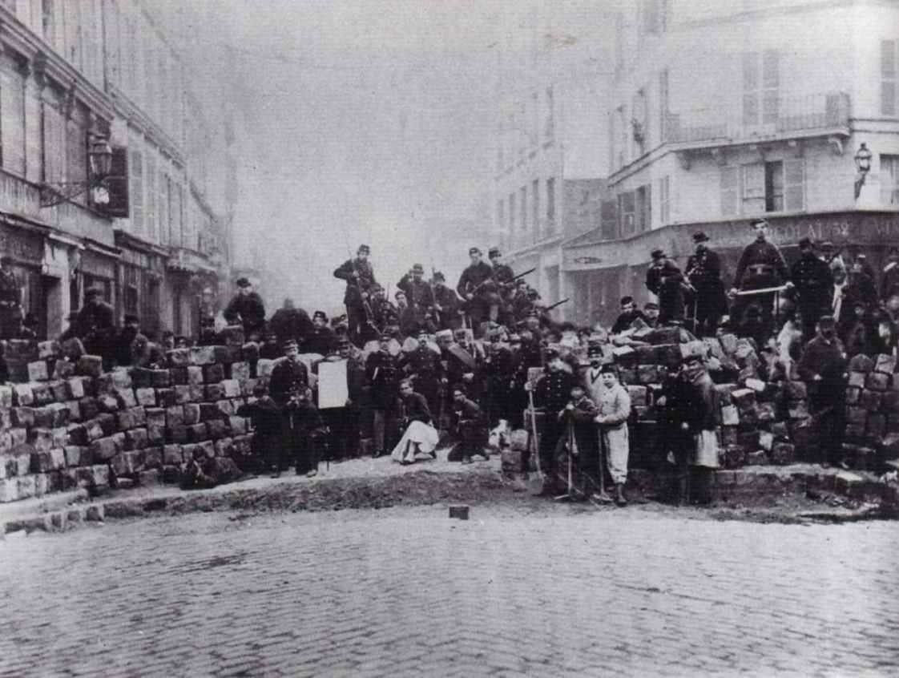

After the coup d'état, which marked the end of the revolution of 1848, France fell under the yoke of the Napoleonic regime for a period of 18 years. This regime brought upon the country not only economic ruin but national humiliation. In rising against the old regime the proletariat under took two tasks – one of them national and the other of a class character – the liberation of France from the German invasion and the socialist emancipation of the workers from capitalism. This union of two tasks forms a unique feature of the Commune.
The bourgeoisie had formed a "government of national defence" and the proletariat had to fight for national independence under its leadership. Actually, it was a government of "national betrayal" which saw its mission in fighting the Paris proletariat. But the proletariat, blinded by patriotic illusions, did not perceive this. The patriotic idea had its origin in the Great Revolution of the eighteenth century; it swayed the minds of the socialists of the Commune; and Blanqui, for example, undoubtedly a revolutionary and an ardent supporter of socialism, could find no better title for his newspaper than the bourgeois cry: "The country is in danger!"
Combining contradictory tasks – patriotism and socialism – was the fatal mistake of the French socialists. In the Manifesto of the International, issued in September 1870, Marx had warned the French proletariat against being misled by a false national idea; the Great Revolution, class antagonisms had sharpened, and whereas at that time the struggle against the whole of European reaction united the entire revolutionary nation, now the proletariat could no longer combine its interests with the interests of other classes hostile to it; let the bourgeoisie bear the responsibility for the national humiliation – the task of the proletariat was to fight for the socialist emancipation of labour from the yoke of the bourgeoisie.
And indeed the true nature of bourgeois "patriotism" was not long in revealing itself. Having concluded an ignominious peace with the Prussians, the Versailles government proceeded to its immediate task – it launched an attack to wrest the arms that terrified it from the hands of the Paris proletariat. The workers replied by proclaiming the Commune and civil war.
Although the socialist proletariat was split up into numerous sects, the Commune was a splendid example of the unanimity with which the proletariat was able to accomplish the democratic tasks which the bourgeoisie could only proclaim. Without any particularly complex legislation, in a simple, straightforward manner, the proletariat, which had seized power, carried out the democratisation of the social system, abolished the bureaucracy, and made all official posts elective.
But two mistakes destroyed the fruits of the splendid victory. The proletariat stopped half-way: instead of setting about "expropriating the expropriators", it allowed itself to be led astray by dreams of establishing a higher justice in the country united by a common national task; such institutions as the banks, for example, were not taken over, and Proudhonist theories about a "just exchange", etc., still prevailed among the socialists. The second mistake was excessive magnanimity on the part of the proletariat: instead of destroying its enemies it sought to exert moral influence on them; it underestimated the significance of direct military operations in civil war, and instead of launching a resolute offensive against Versailles that would have crowned its victory in Paris, it tarried and gave the Versailles government time to gather the dark forces and prepare for the blood-soaked week of May.
But despite all its mistakes the Commune was a superb example of the great proletarian movement of the nineteenth century. Marx set a high value on the historic significance of the Commune – if, during the treacherous attempt by the Versailles gang to seize the arms of the Paris proletariat, the workers had allowed themselves to be disarmed without a fight, the disastrous effect of the demoralisation, that this weakness would have caused in the proletarian movement, would have been far, far greater than the losses suffered by the working class in the battle to defend its arms. The sacrifices of the Commune, heavy as they were, are made up for by its significance for the general struggle of the proletariat: it stirred the socialist movement throughout Europe, it demonstrated the strength of civil war, it dispelled patriotic illusions, and destroyed the naïve belief in any efforts of the bourgeoisie for common national aims. The Commune taught the European proletariat to pose concretely the tasks of the socialist revolution.
The lesson learnt by the proletariat will not be forgotten. The working class will make use of it, as it has already done in Russia during the December uprising.
The period that preceded the Russian revolution and prepared it bears a certain resemblance to the period of the Napoleonic yoke in France. In Russia, too, the autocratic clique has brought upon the country economic ruin and national humiliation. But the outbreak of revolution was held back for a long time, since social development had not yet created the conditions for a mass movement and, notwithstanding all the courage displayed, the isolated actions against the government in the pre-revolutionary period broke against the apathy of the masses. Only the Social-Democrats, by strenuous and systematic work, educated the masses to the level of the higher forms of struggle—mass actions and armed civil war.
The Social-Democrats were able to shatter the "common national" and "patriotic" delusions of the young proletariat and later, when the Manifesto of October 17th had been wrested from the tsar due to their direct intervention, the proletariat began vigorous preparation for the next, inevitable phase of the revolution—the armed uprising. Having shed "common national" illusions, it concentrated its class forces in its own mass organisations – the Soviets of Workers’ and Soldiers’ Deputies, etc. And notwithstanding all the differences in the aims and tasks of the Russian revolution, compared with the French revolution of 1871, the Russian proletariat had to resort to the same method of struggle as that first used by the Paris Commune – civil war. Mindful of the lessons of the Commune, it knew that the proletariat should not ignore peaceful methods of struggle – they serve its ordinary, day-to-day interests, they are necessary in periods of preparation for revolution – but it must never forget that in certain conditions the class struggle assumes the form of armed conflict and civil war; there are times when the interests of the proletariat call for ruthless extermination of its enemies in open armed clashes. This was first demonstrated by the French proletariat in the Commune and brilliantly confirmed by the Russian proletariat in the December uprising.
And although these magnificent uprisings of the working class were crushed, there will be another uprising, in face of which the forces of the enemies of the proletariat will prove ineffective, and from which the socialist proletariat will emerge completely victorious.
Source